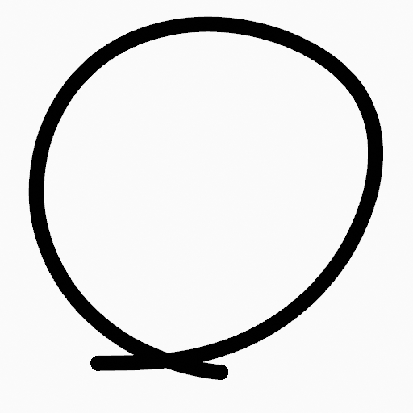
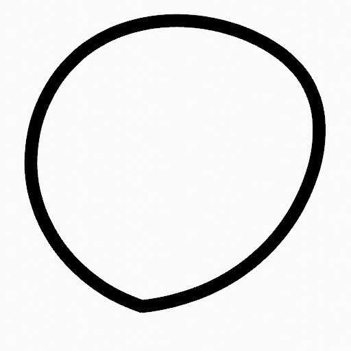

Menu Stroke¶
Trang này đề cập đến nhiều công cụ trong menu Strokes. Đây là những công cụ hoạt động chủ yếu trên nét vẽ, tuy nhiên một số cũng hoạt động với các lựa chọn điểm.
Subdivide¶
Tham khảo
- Mode:
Edit Mode
- Menu:
Operator Subdivide thêm các điểm điều khiển mới vào các đoạn cong được chọn bằng cách chia chúng thành các phần nhỏ hơn. Điều này hữu ích để tạo các chuyển tiếp mượt hơn, chuẩn bị đường cong cho những điều chỉnh tinh vi, hoặc thêm chi tiết cho animation hoặc modeling.
- Number of Cuts
Chỉ định số lần chia cho mỗi đoạn được chọn; mỗi lần cắt thêm một điểm điều khiển mới cho mỗi đoạn.
- Điểm được chọn
Khi bật, giới hạn hiệu ứng chỉ lên các điểm được chọn trong nét vẽ.
Subdivide và Smooth¶
Tham khảo
- Mode:
Edit Mode
- Menu:
Phân nhỏ và làm mượt các nét vẽ bằng cách chèn điểm vào giữa các điểm được chọn.
- Number of Cuts
Số lần phân nhỏ cần thực hiện.
- Điểm được chọn
Khi bật, giới hạn hiệu ứng chỉ lên các điểm được chọn trong nét vẽ.
- Iterations
Số lần lặp lại quy trình.
- Factor
Mức độ mượt trên các điểm được phân nhỏ.
- Smooth Endpoints
Làm mượt các điểm cuối của nét vẽ.
- Keep Shape
Giữ nguyên hình dạng nét vẽ.
- Position
Khi bật, operator ảnh hưởng đến vị trí các điểm.
- Radius
Khi bật, operator ảnh hưởng đến độ dày các điểm.
- Opacity
Khi bật, operator ảnh hưởng đến độ mạnh các điểm (alpha).
Simplify¶
Tham khảo
- Mode:
Edit Mode
- Menu:
Giảm độ phức tạp của các nét Grease Pencil bằng cách xóa điểm một cách có chiến lược. Điều này hữu ích để dọn dẹp nét vẽ, tối ưu hiệu năng và chuẩn bị bản vẽ cho việc chỉnh sửa hay animation tiếp theo. Có nhiều chế độ; được mô tả dưới đây:
Fixed¶
Tham khảo
- Mode:
Edit Mode
- Menu:
Xóa các điểm xen kẽ trong nét vẽ, trừ điểm đầu và điểm cuối.
- Steps
Số lần lặp lại quy trình.
Adaptive¶
Tham khảo
- Mode:
Edit Mode
- Menu:
Dùng thuật toán RDP (thuật toán Ramer-Douglas-Peucker) để xóa điểm. Thuật toán cố gắng thu được hình dạng đường tương tự với ít điểm hơn.
- Factor
Điều khiển mức độ đơn giản hóa đệ quy mà thuật toán áp dụng.
Sample¶
Tham khảo
- Mode:
Edit Mode
- Menu:
Tạo lại hình học nét vẽ với khoảng cách định sẵn giữa các điểm.
- Length
Khoảng cách giữa các điểm trên nét vẽ được tạo lại. Giá trị nhỏ hơn sẽ cần nhiều điểm hơn để tái tạo nét vẽ, trong khi giá trị lớn hơn sẽ cần ít điểm hơn để tái tạo đường cong.
Merge¶
Tham khảo
- Mode:
Edit Mode
- Menu:
Đơn giản hóa nét vẽ bằng cách gộp các điểm gần nhau hơn khoảng cách quy định.
- Distance
Khoảng cách tối đa giữa các vertex để xác định những vertex nào sẽ được gộp.
Outline¶
Tham khảo
- Mode:
Edit Mode
- Menu:
Operator Outline chuyển đổi các nét Grease Pencil được chọn thành các hình chu vi kín. Nó tạo các nét mới quanh ranh giới bên ngoài của nét gốc, tạo ra một viền được tô đầy với độ dày có thể điều chỉnh.
- View
Xác định phương pháp chiếu được dùng để tạo viền:
- View:
Dùng phối cảnh viewport hiện tại làm mặt phẳng chiếu.
- Front:
Dùng các trục X-Z làm mặt phẳng chiếu (nhìn phía trước).
- Side:
Dùng các trục Y-Z làm mặt phẳng chiếu (nhìn từ bên).
- Top:
Dùng các trục X-Y làm mặt phẳng chiếu (nhìn từ trên).
- Camera:
Dùng phối cảnh của camera đang hoạt động làm mặt phẳng chiếu.
- Radius
Đặt độ dày của viền ở cả hai phía của nét gốc. Giá trị cao hơn cho chu vi rộng hơn.
- Offset Factor
Co giãn viền nét vẽ vào trong hoặc ra ngoài. - Giá trị dương đẩy chu vi ra ngoài. - Giá trị âm kéo chu vi vào trong. - Giá trị 0 đặt chu vi giữa trên nét gốc.
- Corner Subdivisions
Số lần phân nhỏ được dùng để làm mượt các góc ở điểm cuối nét vẽ và các điểm nối. Giá trị cao hơn cho góc mượt hơn nhưng làm tăng độ phức tạp của nét vẽ.


Trim¶
Tham khảo
- Mode:
Edit Mode
- Menu:
Cắt tỉa nét vẽ được chọn đến vòng lặp hoặc giao điểm đầu tiên.
 Nét vẽ gốc.¶ |
 Kết quả của phép cắt tỉa.¶ |


Join¶
Join¶
Tham khảo
- Mode:
Edit Mode
- Menu:
Nối hai hoặc nhiều nét vẽ thành một nét duy nhất.
- Type
- Join:
Ctrl-J Nối các nét vẽ được chọn bằng cách nối các điểm.
- Join and Copy:
Nối các nét vẽ được chọn bằng cách nối các điểm trong một nét vẽ mới.
- Leave Gaps
Khi bật, không dùng hình học để nối các nét vẽ.
Join and Copy¶
Tham khảo
- Mode:
Edit Mode
- Menu:
- Shortcut:
Shift-Ctrl-J
Giống Join nhưng Type mặc định là Join and Copy.
Move to Layer¶
Tham khảo
- Mode:
Edit Mode
- Menu:
- Shortcut:
M
Di chuyển các nét vẽ được chọn sang một layer khác.
Một menu pop-up liệt kê tất cả các layer và nhóm layer trong object Grease Pencil đang hoạt động. Chọn một đích đến để di chuyển các nét vẽ được chọn.
- New Layer
Tạo một layer mới và di chuyển các nét vẽ được chọn sang đó.
Sau khi chọn tùy chọn này, một hộp thoại hiện ra để nhập tên của layer mới.
Assign Material¶
Tham khảo
- Mode:
Edit Mode
- Menu:
Thay đổi material được liên kết với nét vẽ được chọn. Bạn có thể chọn tên material được dùng bởi nét vẽ được chọn từ danh sách material của object Grease Pencil hiện tại.
Set as Active Material¶
Tham khảo
- Mode:
Edit Mode
- Menu:
Đặt material đang hoạt động của object dựa trên material của nét vẽ được chọn.
Arrange¶
Tham khảo
- Mode:
Edit Mode
- Menu:
Thay đổi thứ tự vẽ của các nét vẽ trong layer 2D.
- Bring to Front
Chuyển các điểm/nét vẽ được chọn lên trên cùng.
- Bring Forward
Chuyển các điểm/nét vẽ được chọn lên trên một bậc so với thứ tự vẽ hiện tại.
- Send Backward
Chuyển các điểm/nét vẽ được chọn xuống dưới một bậc so với thứ tự vẽ hiện tại.
- Send to Back
Chuyển các điểm/nét vẽ được chọn xuống dưới cùng.
Close¶
Tham khảo
- Mode:
Edit Mode
- Menu:
- Shortcut:
F
Đóng hoặc mở các nét vẽ bằng cách nối điểm cuối với điểm đầu.
- Type
- Close All:
Đóng tất cả các nét vẽ hở được chọn.
- Open All:
Mở tất cả các nét vẽ kín được chọn.
- Toggle:
Đóng hoặc Mở các nét vẽ được chọn tùy theo cần thiết.
- Match Point Density
Thêm điểm vào đoạn mới để giữ nguyên mật độ.
Toggle Cyclic¶
Tham khảo
- Mode:
Edit Mode
- Menu:
Chuyển đổi giữa nét vẽ hở và nét vẽ kín (cyclic).
- Type
- Close All:
Đóng tất cả các nét vẽ hở được chọn.
- Open All:
Mở tất cả các nét vẽ kín được chọn.
- Toggle:
Đóng hoặc Mở các nét vẽ được chọn tùy theo cần thiết.
- Match Point Density
Thêm điểm vào đoạn mới để giữ nguyên mật độ.
Set Caps¶
Tham khảo
- Mode:
Edit Mode
- Menu:
Chuyển đổi kiểu đầu nét của nét vẽ.
- Rounded
Đặt điểm đầu và điểm cuối của nét vẽ thành tròn (mặc định).
- Flat
Chuyển đổi đầu nét ở điểm đầu và điểm cuối giữa phẳng và tròn.
- Toggle Start
Chuyển đổi đầu nét ở điểm đầu giữa phẳng và tròn.
- Toggle End
Chuyển đổi đầu nét ở điểm cuối giữa phẳng và tròn.


Switch Direction¶
Tham khảo
- Mode:
Edit Mode
- Menu:
Operator Switch Direction đảo ngược hướng của nét Grease Pencil được chọn. Điều này nghĩa là điểm đầu của nét vẽ trở thành điểm cuối, và ngược lại. Dù thao tác này không thay đổi hình thức của nét vẽ, nó ảnh hưởng đến các hành vi phụ thuộc vào thứ tự điểm, chẳng hạn Build Modifier.
Set Start Point¶
Tham khảo
- Mode:
Edit Mode
- Menu:
Đặt điểm đầu cho các nét vẽ cyclic, xác định điểm mà nét vẽ bắt đầu và kết thúc khi lặp.
Set Uniform Thickness¶
Tham khảo
- Mode:
Edit Mode
- Menu:
Đặt độ dày bằng nhau cho toàn bộ nét vẽ.
- Thickness
Giá trị độ dày được dùng trên tất cả các điểm của nét vẽ.
Set Uniform Opacity¶
Tham khảo
- Mode:
Edit Mode
- Menu:
Đặt độ mờ bằng nhau cho toàn bộ nét vẽ.
- Opacity
Giá trị độ mờ được dùng trên tất cả các điểm của nét vẽ.
Scale Thickness¶
Tham khảo
- Mode:
Edit Mode
- Menu:
Khi bật, co giãn độ dày nét vẽ trong các phép biến đổi tỉ lệ.
Set Curve Type¶
Tham khảo
- Mode:
Edit Mode
- Menu:
- Shortcut:
V
Đặt kiểu spline cho các spline trong thành phần nét vẽ nằm trong vùng chọn.
- Type
Chỉ định kiểu spline đích. Để biết thêm chi tiết về các kiểu spline, xem tài liệu Spline Types.
- Bézier:
Chuyển spline sang kiểu Bézier. - Spline Poly được chuyển với handle vector. - Spline NURBS hoặc Catmull Rom được chuyển với handle tự động.
Ghi chú
Khi chuyển spline NURBS sang Bézier, cần ít nhất sáu điểm. Nếu số điểm không phải bội số của ba, spline sẽ bị cắt ngắn.
- NURBS:
Chuyển spline sang kiểu NURBS.
- Poly:
Chuyển spline sang kiểu poly.
- Catmull Rom:
Chuyển spline sang kiểu Catmull Rom.
- Handles
Bao gồm thông tin handle trong quá trình chuyển đổi.
Set Resolution¶
Tham khảo
- Mode:
Edit Mode
- Menu:
Đặt số điểm được tạo dọc theo mỗi đoạn cong (giữa hai handle).
Set Stroke Type¶
Tham khảo
- Mode:
Edit Mode
- Menu:
Thay đổi kiểu của các đường cong được chọn.
- Type
- Stroke:
Chuyển các đường cong được chọn thành chỉ có nét. Mọi thành phần fill bị xóa.
- Fill:
Chuyển các đường cong được chọn thành chỉ có fill. Viền nét bị xóa.
- Both:
Bật cả thành phần nét và fill trên các đường cong được chọn.
Reset UVs¶
Tham khảo
- Mode:
Edit Mode
- Menu:
Đặt lại biến đổi UV của các đường cong được chọn về giá trị mặc định.
Điều này khôi phục UV mapping của nét và fill, xóa mọi điều chỉnh co giãn, xoay hoặc offset đã áp dụng lên tọa độ material.
Join Fills¶
Tham khảo
- Mode:
Edit Mode
- Menu:
- Shortcut:
Shift-J
Gộp nhiều vùng fill được chọn thành một fill duy nhất.
Điều này hữu ích khi kết hợp các hình kín riêng biệt thành một vùng tô thống nhất.
Separate Fills¶
Tham khảo
- Mode:
Edit Mode
- Menu:
- Shortcut:
Alt-P
Tách một vùng fill đã gộp thành các fill riêng biệt dựa trên các đường ranh giới riêng của chúng.
Điều này cho phép các vùng fill đã nối trước đó có thể được chỉnh sửa độc lập trở lại.
- Individual
Tạo một fill riêng cho từng nét vẽ.